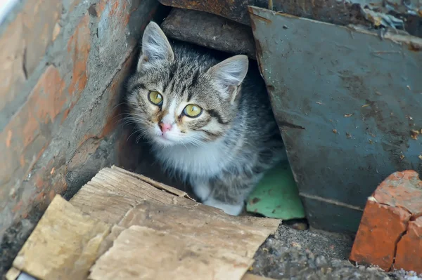
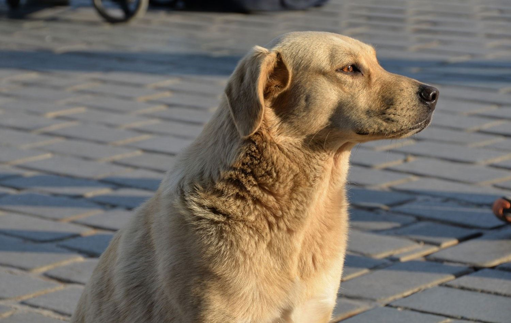
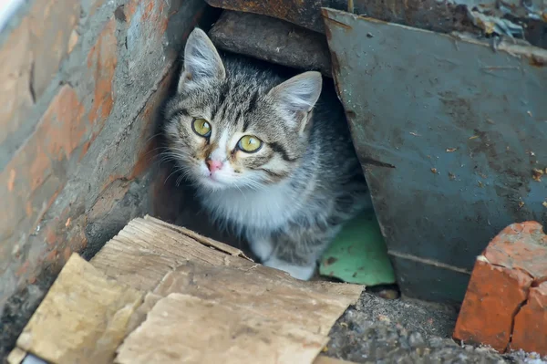
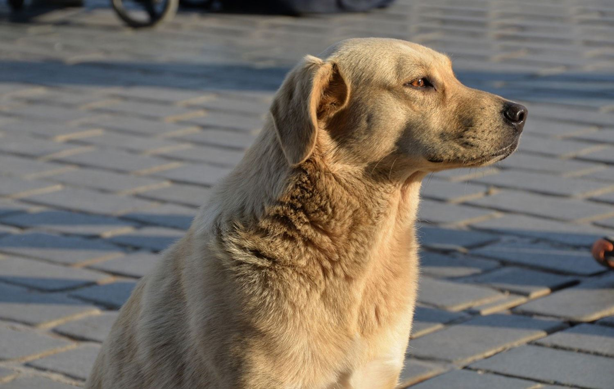
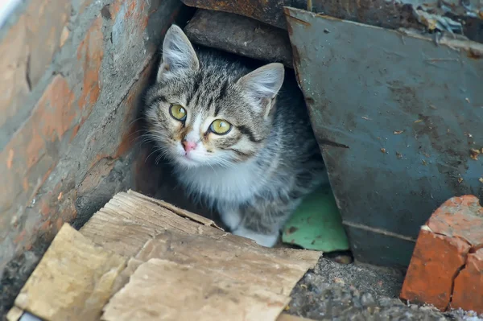
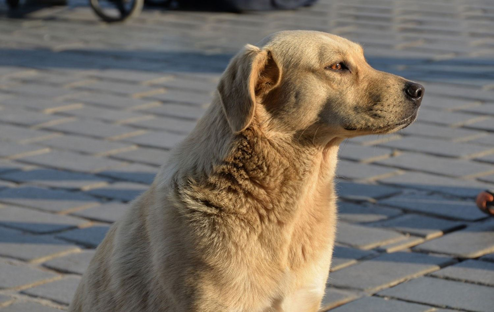

Find Your Forever Friend.
Discover the joy of pet adoption and help us give every animal a loving home. Your new best friend is waiting for you at Pati.


Discover the joy of pet adoption and help us give every animal a loving home. Your new best friend is waiting for you at Pati.